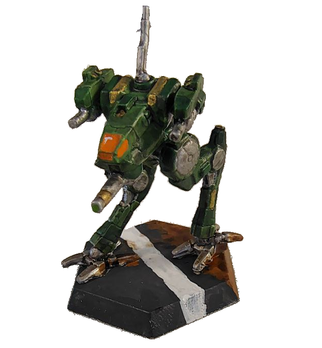

Qui sotto sono riportate le più importanti fonti e utility per approcciarsi al mondo di Battletech per la prima volta.
Le risorse riportate riguardano principalmente il gioco da Tavolo, in particolare la versione Classica del gioco ma è possibile partendo da queste trovare info e ulteriori risorse rigurado altri prodotti dell linea come Alpha Strike e Gothic
Riservo qui anche una piccola menzione di onore al Videogame che mi ha avvicinato a questa passione/ossessione, ovvero: Mechwarrior 5: Mercenaries
Le risorse riportate riguardano principalmente il gioco da Tavolo, in particolare la versione Classica del gioco ma è possibile partendo da queste trovare info e ulteriori risorse rigurado altri prodotti dell linea come Alpha Strike e Gothic
Riservo qui anche una piccola menzione di onore al Videogame che mi ha avvicinato a questa passione/ossessione, ovvero: Mechwarrior 5: Mercenaries

Miniatura di un Locust dipinta da me
Il sito contiene innumerevoli risorse comprese le regole ridotte per provare a giocare, un forum per interagire con la Community e tanto altro
Sarna è la wiki Ufficiale di Battletech, contiene tutte le informazioni possibili riguardo al gioco, le regole ed alla Lore.
In assoluto Sarna è la risorsa più completa per tuto quello che riguarda Battletech.
In assoluto Sarna è la risorsa più completa per tuto quello che riguarda Battletech.
Megamek è una versione online non ufficial ed Open Source del gioco da tavolo Battletech Classic
Con questo software è possibile giocare partite di Battletech contro il computer o contro altri giocatori in un campo di battaglia virtuale con maggiore automazione e persino giocare una intera campagna.
Con questo software è possibile giocare partite di Battletech contro il computer o contro altri giocatori in un campo di battaglia virtuale con maggiore automazione e persino giocare una intera campagna.